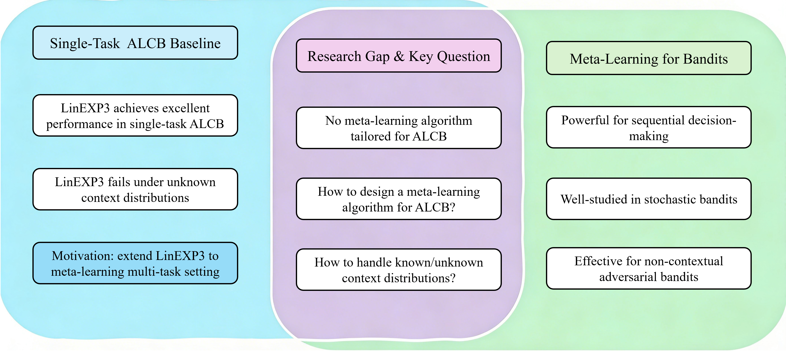

The authors state that all theoretical regret results were formalized and kernel-checked in Lean 4.31.0 with Mathlib v4.31.0.
Abstract
Meta-learning has emerged as an effective paradigm for transferring knowledge across sequential bandit tasks. While substantial progress has been made for stochastic bandits and non-contextual adversarial bandits, meta-learning for adversarial linear contextual bandits (ALCBs) with random action sets remains largely unexplored. To address this problem, we propose Meta-LinEXP3, an online-within-online algorithm that constructs a predictable task-level prior from completed tasks to guide the inner LinEXP3 learner. For known context distributions, we develop a policy-centered estimator that achieves an intrinsic-dimension $\mathcal{O}(\sqrt{n})$ per-task regret bound. For unknown distributions, we introduce a past-only regularized moment estimator with an $\mathcal{O}(n^{2/3})$ leading regret term and explicit finite-sample error. We further establish a direct connection between prior accuracy and transfer regret, showing that increasingly accurate priors yield sublinear transfer-dependent regret across tasks. Experiments demonstrate the effectiveness of Meta-LinEXP3, including its application to structured hyperspectral tensor sampling.
Problem
Meta-learning across sequential tasks has been studied for stochastic and non-contextual adversarial bandits. It remains largely unexplored for adversarial linear contextual bandits with random action sets, where restarting a learner on every task discards transferable information.
Approach
Meta-LinEXP3 is an online-within-online algorithm. An outer learner builds a predictable softmax prior from completed-task summaries, using positive-cosine retrieval weighting or uniform aggregation, and holds it fixed while an inner LinEXP3 learner plays the next task. A policy-centered estimator (PC-KDE) handles known context distributions, and a past-only regularized moment estimator (PRME) handles unknown ones. The theoretical results are reported as formalized in Lean 4 with Mathlib.

Figure 1 : Relationship between Meta-LinEXP3 and closely related bandit settings. The left column summarizes the single-task LinEXP3 starting point, the middle column gives the ALCB meta-learning problem studied here, and the right column lists related meta-bandit settings.
Results
PC-KDE achieves an intrinsic-dimension O(√n) per-task regret bound. PRME achieves an O(n^{2/3}) leading term with explicit finite-sample error, and more accurate priors yield sublinear transfer-dependent regret. Experiments on synthetic data, MovieLens, and KSC hyperspectral tensor sampling show gains over LinEXP3, including about a 1.1% cumulative reduction on KSC.